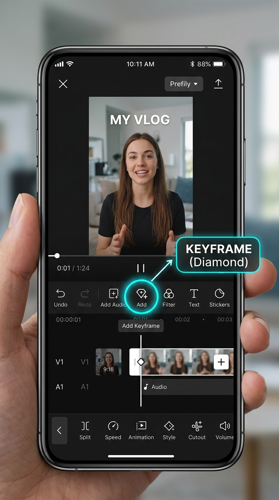
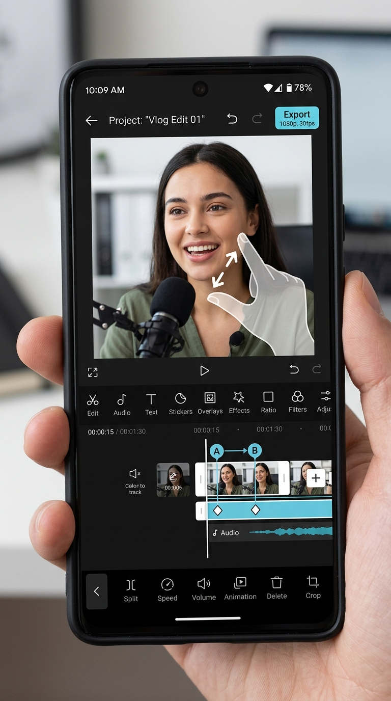

1. BẢN CHẤT CỐT LÕI
+
Keyframe Là Gì?
Đừng sợ từ ngữ kỹ thuật. Hãy tưởng tượng Keyframe giống như một "Chiếc đinh đóng mốc thời gian" trên timeline video của bạn:
- Tại giây 01:00: Bạn đóng một chiếc đinh (Keyframe 1) và bảo CapCut "Ở giây này, video kích thước 100%".
- Tại giây 02:00: Bạn di chuyển tới và đóng chiếc đinh thứ hai (Keyframe 2), rồi phóng to mặt lên 130%.
- CapCut sẽ tự động: Làm chuyển động từ 100% trườn dần lên 130% trong suốt khoảng thời gian 1 giây đó mà bạn không cần phải cắt ghép từng frame!
⚡
Quy Tắc 2 Điểm Bất Biến
Sai lầm số 1 của người mới là chỉ bấm 1 Keyframe rồi phóng to ngay, dẫn đến cả video bị phóng to từ đầu đến cuối!
• Điểm B (Kết thúc): Kích cỡ đã phóng to (hoặc cỡ cận mặt)
👉 Nếu để A và B cách nhau 2.0 giây: Hiệu ứng đẩy ống kính chậm rãi (Slow Dolly-in) cực sang và tập trung.
2. ẢNH CHỤP GIAO DIỆN THỰC TẾ TRÊN CAPCUT MOBILE
Dưới đây là ảnh chụp màn hình chuẩn của ứng dụng CapCut Mobile, đánh dấu chính xác nút bấm hình thoi và thao tác chụm ngón tay:


3. QUY TRÌNH 5 BƯỚC CẦM TAY CHỈ VIỆC
Chọn Đoạn Video Cần Phóng To / Thu Nhỏ
Mở dự án CapCut của bạn. Lướt timeline và dùng ngón tay chạm nhẹ vào clip để kích hoạt viền sáng trắng bao quanh clip.
- Nếu video quá dài, hãy dùng công cụ Tách (Split) ở đầu và cuối đoạn bạn muốn phóng to để dễ quản lý.
- Đảm bảo clip đang được chọn thì nút Keyframe mới hiển thị.
Đặt Keyframe Bắt Đầu (Điểm A - Trạng Thái Gốc)
Kéo vạch chỉ thời gian (vạch trắng dọc Playhead) tới đúng khung hình bạn muốn bắt đầu chuyển động phóng to.
- Nhìn vào thanh công cụ nằm ngay bên dưới video preview, bấm vào nút Hình thoi dấu cộng ♢+.
- Trên thanh video của bạn sẽ xuất hiện 1 điểm hình thoi màu đỏ. Đây chính là mốc A cố định kích thước 100%.
Lăn Timeline Tới Vị Trí Muốn Phóng To Xong (Điểm B)
Gạt ngón tay sang trái để timeline trôi sang phải khoảng 0.3s đến 1.5s tùy vào tốc độ bạn muốn.
- Muốn giật nhanh (Punch-in): Chỉ cần cách mốc A khoảng 5 đến 10 frames (khoảng 0.2 - 0.3 giây).
- Muốn trượt êm ái (Slow Push): Cách mốc A từ 1.5 giây đến 3.0 giây.
Dùng 2 Ngón Tay Thu Phóng Trên Màn Hình Xem Trước
Vẫn để vạch trắng ở Điểm B, chạm 2 ngón tay lên màn hình video trên cùng:
- Phóng to (Zoom In): Đặt 2 ngón tay chụm lại rồi banh rộng ra ngoài. Kéo nhẹ khung hình sao cho mặt nhân vật nằm ngay 1/3 phía trên.
- Thu nhỏ (Zoom Out): Đặt 2 ngón tay rộng rồi bóp chụm lại vào giữa.
- Ngay khi bạn buông tay, CapCut sẽ tự động sinh ra Keyframe thứ hai tại điểm B. Bấm nút Play để xem thành quả!
Kỹ Thuật Đỉnh Cao: Dùng "Đồ Thị" (Graphs) Làm Mượt Chuyển Động
Chuyển động mặc định của CapCut là Linear (tuyến tính), chuyển động thẳng đơ như rô-bốt. Hãy biến nó thành chuyển động ống kính điện ảnh sang xịn:
- Di chuyển vạch trắng Playhead nằm ở giữa khoảng cách 2 Keyframe.
- Vuốt thanh công cụ đáy sang phải, chọn mục Đồ thị (Graphs) (biểu tượng hình sóng sin).
- Chọn preset: Cực mượt 1 (Ease In 1) hoặc Dòng chảy 1 (Flow 1).
- Lập tức cú Zoom sẽ bắt đầu từ từ rồi nhanh dần hoặc ngược lại, nhìn mượt mắt gấp 10 lần!
4. THỬ NGHIỆM TRỰC TIẾP TRÊN TRÌNH MÔ PHỎNG CAPCUT
Bảng Điều Khiển Giả Lập Keyframe CapCut
Kéo thanh trượt Playhead bên dưới để xem sự biến đổi kích thước video theo thời gian thực giữa 2 Keyframe A (100%) và B (160%).
5. SAI LẦM THƯỜNG GẶP VÀ CÁCH KHẮC PHỤC
| Hiện Tượng Lỗi Của Học Viên | Nguyên Nhân Gốc Rễ | Giải Pháp Khắc Phục Ngay |
|---|---|---|
|
LỖI 1 Bấm phóng to xong toàn bộ video bị phóng to, không hề có hiệu ứng trượt. |
Mới chỉ đặt 1 Keyframe duy nhất. Không có điểm neo gốc để CapCut so sánh. |
CÔNG THỨC 2 ĐIỂM Luôn đặt Keyframe 1 ở kích cỡ bình thường trước. Sau đó lăn timeline đi 1 giây rồi mới phóng to ở Keyframe 2. |
|
LỖI 2 Muốn phóng to lên rồi GIỮ NGUYÊN một lúc rồi mới thu nhỏ về, nhưng video lại bị co giật liên tục. |
Chỉ đặt 2 hoặc 3 Keyframe sát nhau mà thiếu giai đoạn "Hold" (Giữ khung). |
CÔNG THỨC 4 KEYFRAME • K1: 100% (bắt đầu) • K2: 130% (phóng to xong) • K3: 130% (giữ nguyên kích thước) • K4: 100% (thu nhỏ về gốc) |
|
LỖI 3 Đặt nhầm điểm Keyframe thừa làm video bị méo hoặc giật lắc không mong muốn. |
Do vô tình chạm tay dịch chuyển video ở các điểm khác trên timeline làm CapCut tự đẻ thêm Keyframe thừa. |
XÓA BẰNG NÚT ♢- Rê vạch trắng Playhead khớp chính xác vào hình thoi đỏ bị thừa. Nút ♢+ sẽ tự đổi thành ♢- (dấu trừ màu đỏ). Bấm vào dấu trừ để xóa sạch! |
🎬 Lời Dặn Đạo Diễn Thực Chiến Cho Video Triệu View
"Đừng lạm dụng Keyframe bừa bãi. Hãy dùng Keyframe có mục đích tâm lý rõ ràng:
Dùng khi bạn nói một từ khóa bí mật, một con số giật gân, hoặc câu chốt hạ (Punchline) hài hước. Nó hoạt động như một cú đấm thị giác đánh thức não bộ người xem.
Dùng trong các đoạn kể chuyện nội tâm sâu sắc, chia sẻ tâm sự thật lòng (Tầng 3) để từ từ kéo mắt người xem vào sâu trong tròng mắt và cảm xúc của bạn."